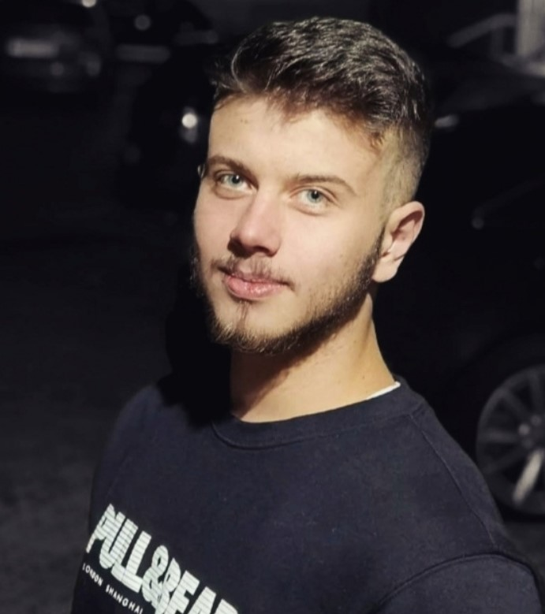

I was born in Jablanica where I have completed primary school and
gymnasium. After completing secondary education, I enrolled in college. I am
currently in my second year of the Faculty of Information Technologies. I have
skills in c++, c#, html, css and javascript. I have a great interest in web
development. I see myself as a frontend developer in the future. I like to
acquire new knowledge and transfer it to others. I speak English fluently. I am a
hard-working person and always eager to learn new things. I am a gym addict
and I lead a healthy lifestyle. I enjoy reading books.
Bajramović Orhan